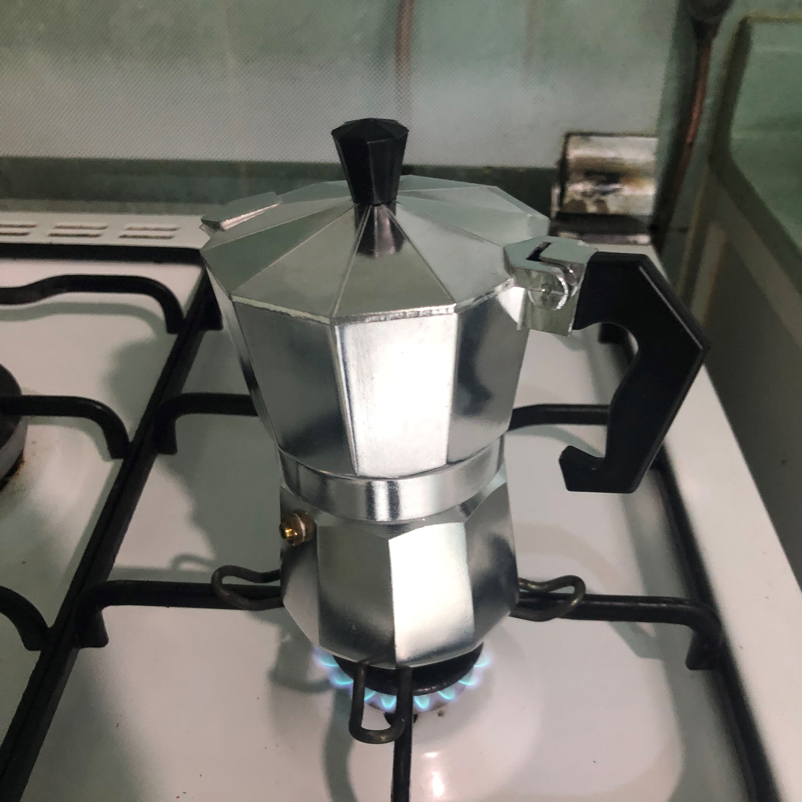
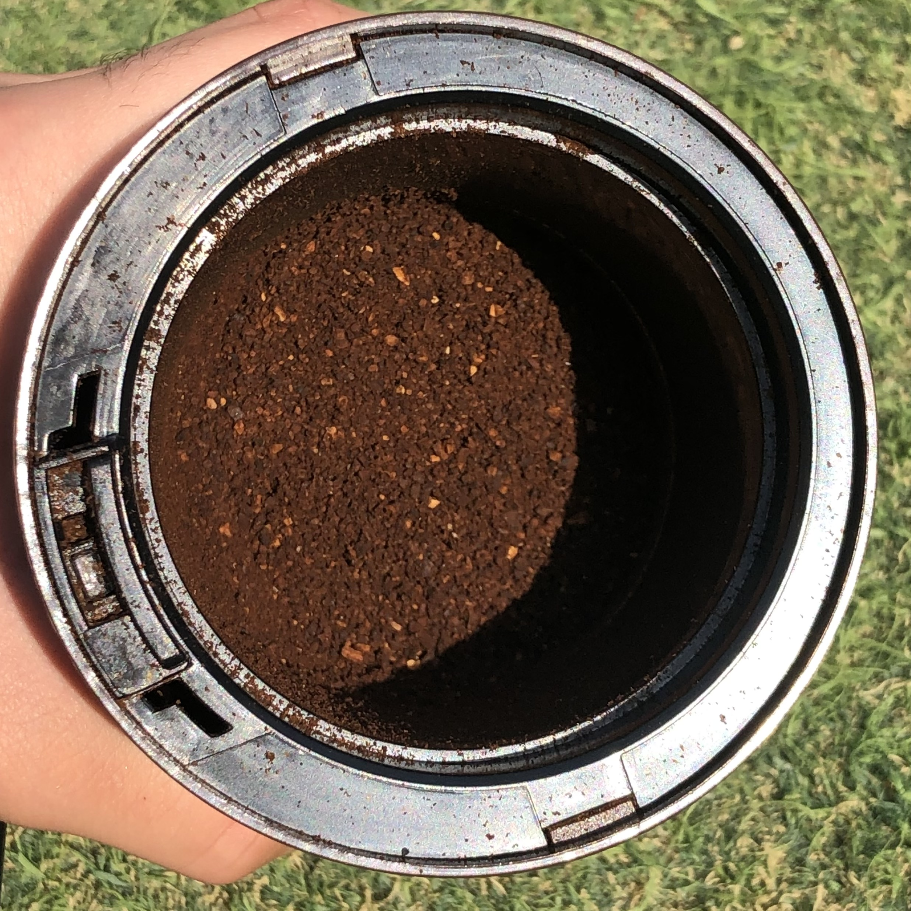
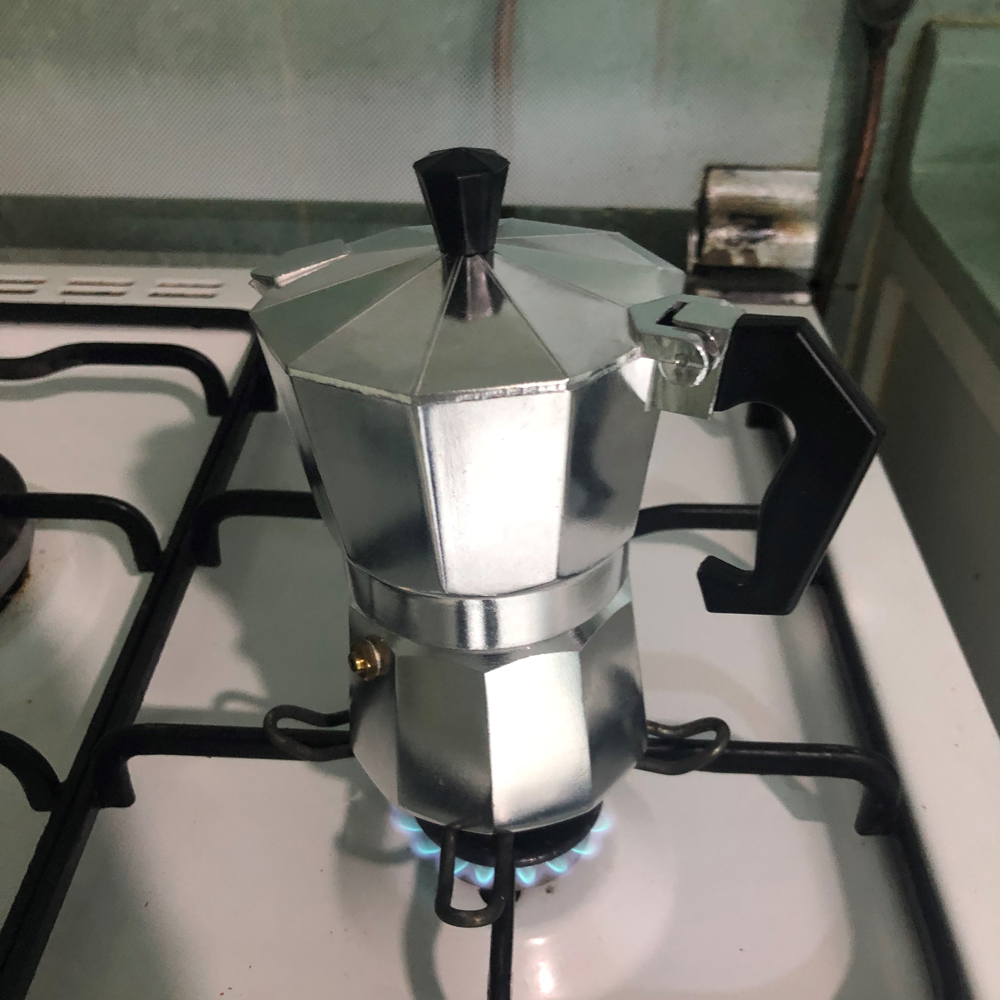
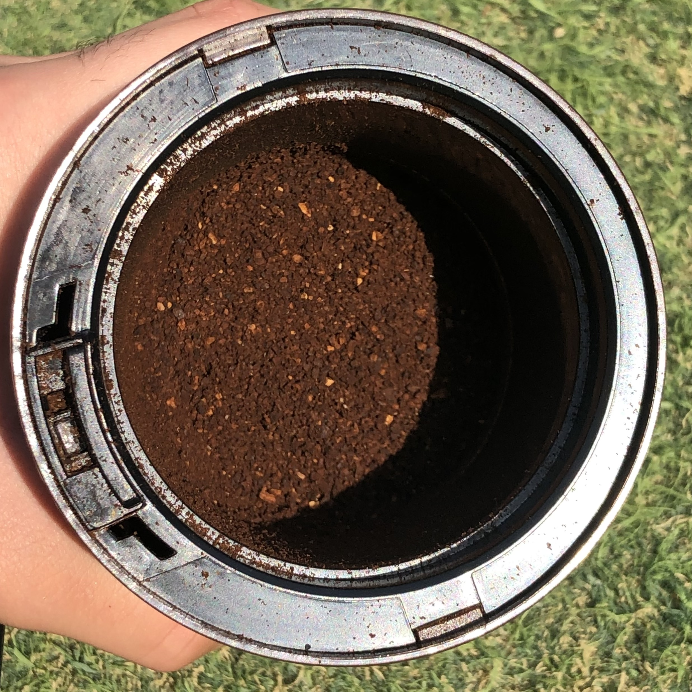
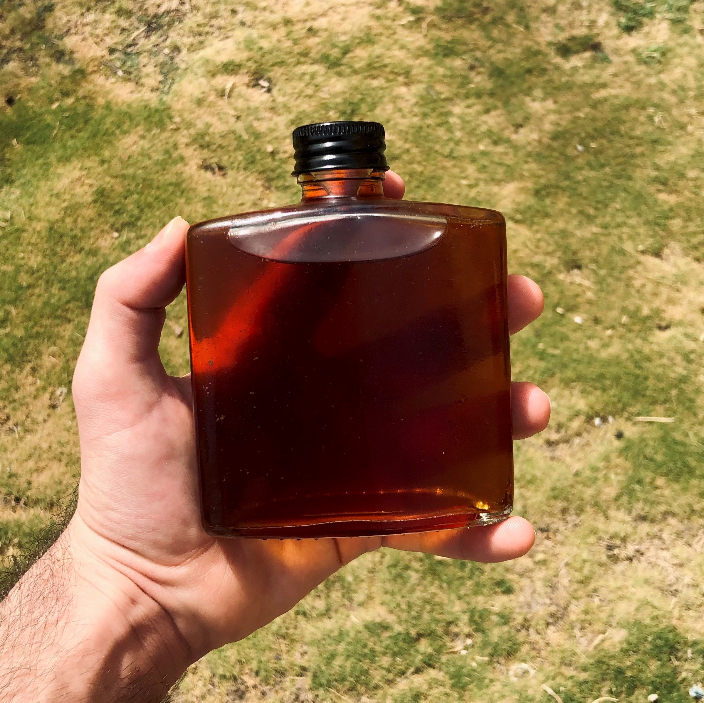

The last two steps of making your ideal coffe cup!
Grinding and brewing are the most connected steps in making coffee, since every type of grinding is suitable for a certain type of brewing.
How does grinding affect the coffee?
The answer to this question is quite simple: the a finer the coffee powder is, the easier it is for water to run through it extracting all the coffee taste, resulting in a better tasting coffee. Otherwise, the coffee might taste sour, acidic, bitter, watered down, tasteless and just undrinkable.
Grind/Brew connection:
There are many ways of brewing coffee. In detail: there two factors:
- Time:
- Used Machine:
- French Press
- Moka pot
- Ibrek (Turkish coffee)
The period of time, in which coffee will brew, determines whether a hard coffee grind is preferable or whether a soft one is. For example, cold brew is one of the most popular drinks. It requires at least 12 hours to make (to let the coffee brew). That huge time span allows us to use hard grinded coffee, since the water can take its time extracting the taste. In general, for all the cold water brewing method it is prefered to use hard grinded coffee.
Machines are usually used for hot water brewing methods. Each machine require a certain amount of time for the coffee to brew. Just as mentioned aforely, the brewing time affects the needed grind. So here is a list of some machines, brew time and grind required.
Usually takes 4-5 minutes.
Requires a semi-hard grind.
Usually takes 3-4 minutes.
Requires a semi-hard to fine grind.
Usually takes 6-8 minutes. Requires a very fine grind. Turkish coffee is a special case. To get that thick-dense texture you have to let the soft coffee brew for longer.